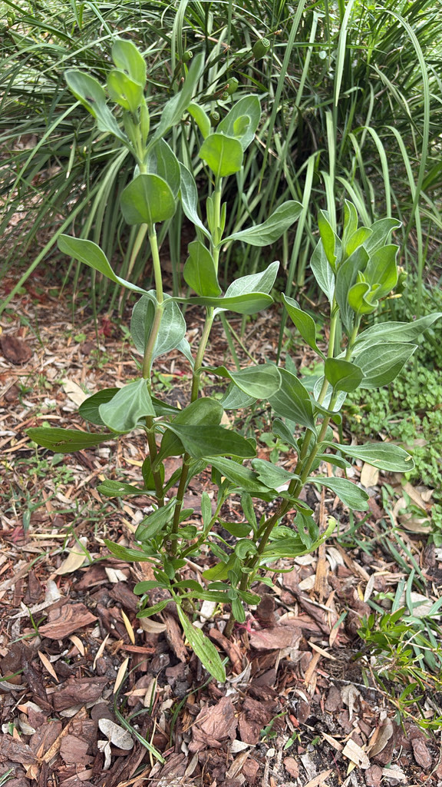

- A tough, silvery-leaved Florida native that thrives right at the salty edge where most plants cannot.
- Its cheerful yellow daisy flowers bloom much of the year along marsh and shoreline margins.
- Its leaves are built to shed salt — a visible adaptation you can see in the frosted, silvery coating on every leaf.
- It spreads into dense, soil-holding colonies that help anchor shorelines against erosion.
- You are seeing this plant in action: park volunteers and Bright Futures high school students are actively planting sea ox-eye around the park's eroding pond banks, supported by grants from both the Tampa Bay and Sarasota Bay Estuary Programs.
Native to the coastal southeastern United States, including Florida, and the Gulf and Caribbean coasts. A characteristic plant of salt marshes, mangrove edges, and brackish shorelines.
- Sea ox-eye daisy is a salt-marsh specialist — a low, woody Florida native that grows where the ground is salty, wet, and punishing for ordinary plants. Its thick, fleshy, silvery-gray leaves are adapted to store water and cope with salt, giving the plant a frosted, coastal look.
- Through much of the year it carries bright yellow, daisy-like flowers that stand out against the gray foliage and feed coastal pollinators. After flowering, the seed heads become small and burr-like.
- Its real ecological job is holding ground. Sea ox-eye spreads by rhizomes into dense colonies that bind soil at the marsh and shoreline edge, buffering wave energy and resisting erosion — quiet, essential work in the transition zone between land and water.
- There is no better plant to meet at this park: Palma Sola Botanical Park sits right beside Palma Sola Bay, and sea ox-eye is a plant of exactly that salt-marsh and shoreline edge — the same species holding the soil along the bay just outside the gates. It is a go-to plant for Tampa Bay–area shoreline restoration for that very reason.
The yellow flowers provide nectar for bees, butterflies, and other coastal pollinators much of the year, and the seeds feed birds. Its dense colonies stabilize shorelines and offer cover for small marsh animals and insects.
A low, woody, spreading native subshrub forming dense colonies.
Yellow, daisy-like, on short stalks, much of the year.
Thick, succulent, silvery gray-green, opposite, often slightly toothed.
Spreads by rhizomes and seed into clonal stands.
Silvery, fleshy gray-green leaves and yellow daisy flowers in a dense, low colony along a marsh or shoreline edge.
The leaves are technically edible — ethnobotanical references note them used raw or cooked — but the plant is quite bitter and is not a practical food source. No toxicity has been documented for people or dogs. Handle freely; it poses no known hazard.
The Florida Wildflower Foundation and FNPS both confirm native populations vouchered from Manatee County's coastal zone, making this a genuinely local native at Palma Sola Botanical Park.

- © Randall Carter (CC-BY-NC), via iNaturalist
- © Franky McArthur (CC-BY-NC), via iNaturalist